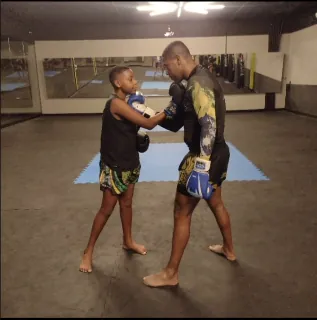
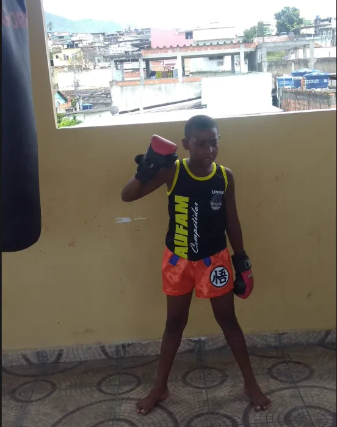
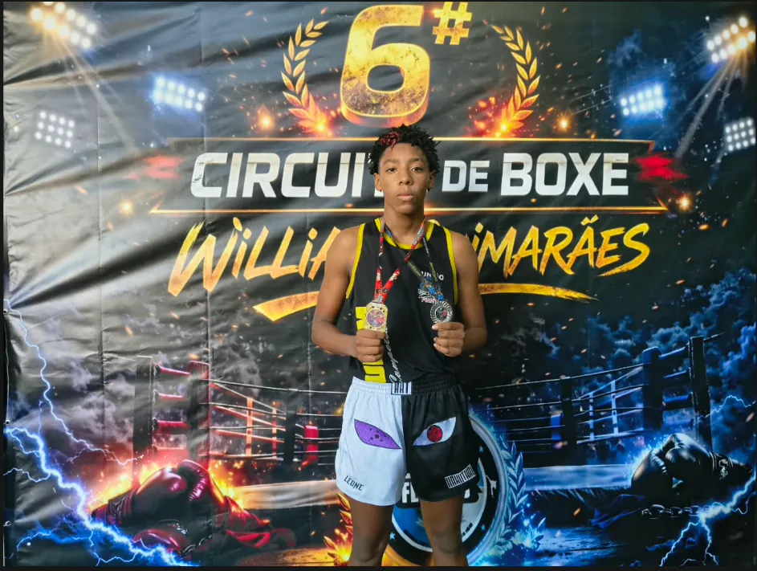
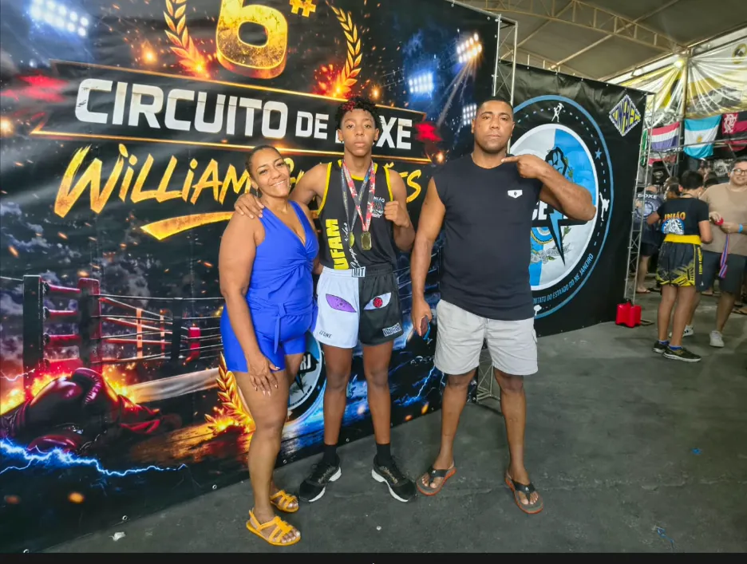
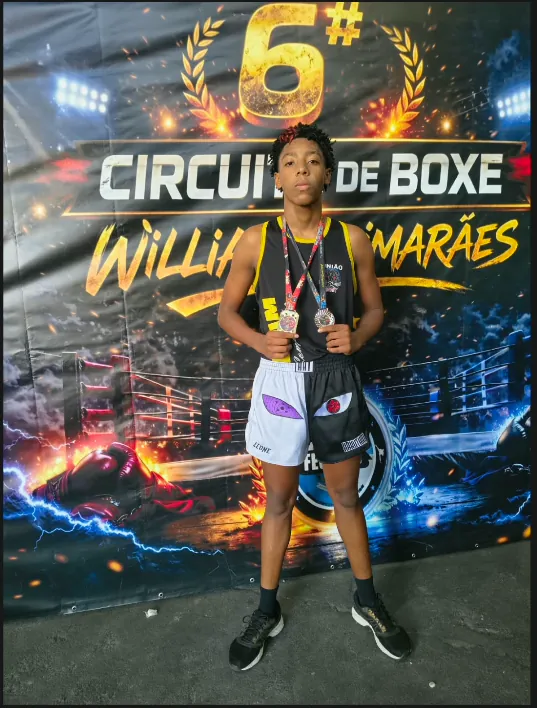
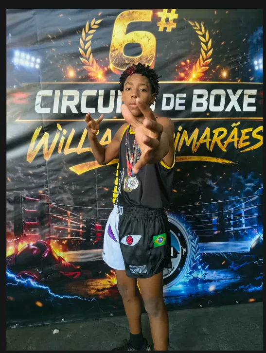
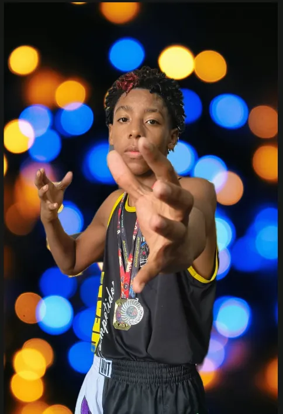

Arthur de Moraes Cândido, atleta de kickboxing
Kickboxing · Sub-17 · Associação AUFAM
1º lugar no Campeonato Brasileiro Sudeste em Point Fighting, até 69 kg.
Sobre o atleta
Tudo começou em casa


Antes das medalhas, antes do pódio, havia um menino olhando o pai treinar. Arthur não conheceu o kickboxing pela televisão nem por acaso: conheceu pelo exemplo de quem estava mais perto dele.
A curiosidade virou vontade, e a vontade virou o primeiro par de luvas. Os primeiros treinos foram ao lado do pai — ele ensinando a guarda, o filho tentando acompanhar cada movimento. O que começou como um momento entre os dois foi, aos poucos, virando paixão.
Com o tempo, a brincadeira ganhou rotina, e a rotina ganhou propósito: treino, disciplina e respeito. O pai, que foi o primeiro professor, passou a ser também o primeiro torcedor.
Hoje Arthur representa o Rio de Janeiro e já é campeão do Brasileiro Sudeste em Point Fighting, na categoria até 69 kg, com quatro vitórias em um único dia de competição. Mas cada luta ainda carrega aquele começo: o menino que viu o pai no tatame e decidiu que também queria estar ali.
Mais do que vencer lutas, construir uma história que inspire.
Campeão no boxe
1º lugar 6º Circuito de Boxe Willian Guimarães
No kickboxing, Arthur luta com mãos e pernas. No boxe, só os punhos contam. Mesmo assim, ele aceitou o desafio de entrar em outra modalidade, com outras regras, e voltou do 6º Circuito de Boxe Willian Guimarães com o 1º lugar.
O resultado mostra que a base construída nos treinos vai além de um único esporte: guarda firme, cabeça no lugar e coragem para encarar o que é novo.





Em ação
Campeonatos
| Data | Evento | Categoria | Resultado |
|---|---|---|---|
| — | Campeonato Brasileiro Sudeste | Point Fighting · Sub-17 · até 69 kg | 1º lugar |
| — | Campeonato Brasileiro Sudeste | Light Contact · Sub-17 · até 69 kg | 2º lugar |
| Taça Rio de Janeiro de KickboxingSeletiva para a Copa Brasil 2026 | Point Fighting · Sub-17 · até 69 kg | 1º lugar | |
| Copa Carioca de KickboxingSeletiva para o Campeonato Brasileiro 2026 · Rio Bonito – RJ | Light Contact · Sub-17 · até 69 kg | 1º lugar | |
| Taça Guanabara de KickboxingSeletiva para o Campeonato Brasileiro 2026 | Light Contact · Sub-17 · até 69 kg | 3º lugar | |
| Campeonato Estadual de Kickboxing 2025Rio de Janeiro – RJ | Sub-17 · até 69 kg | 2º lugar | |
| — | Campeonato Brasileiro de Kickboxing | 3º lugar | |
| — | Campeonato Intermunicipal de Kickboxing | 1º lugar | |
| — | Willian Guimarães | 1º lugar | |
| — | SESC de Verão | 2º lugar |
No tatame e no pódio
-
Braço erguido: vitória anunciada no tatame -
Medalha no peito, na área de competição -
No lugar mais alto do pódio -
Medalhas de ouro e prata -
Troféu e medalhas -
Comemoração no pódio
Sua marca no canto do atleta
Apoie um atleta de kickboxing em formação e associe sua marca à disciplina e à competição.
- Inscrições e viagens
- Taxas de campeonatos, transporte e hospedagem para competir fora da cidade.
- Equipamentos
- Luvas, caneleiras, protetores, bandagens e uniforme de competição.
- Preparação
- Treinos, preparação física, acompanhamento nutricional e recuperação.
Vamos conversar
Para patrocínio, parcerias e convites para eventos, fale com o responsável pelo atleta.
WhatsApp do responsável: (21) 98169-5055